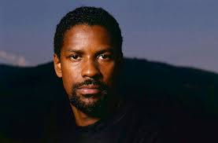
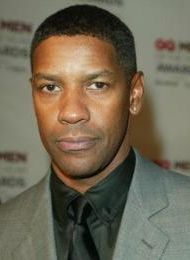

Denzel Washington est un acteur, réalisateur et producteur de cinéma américain né le 28 décembre 1954 à Mount Vernon (État de New York).
Il est l’un des membres les plus emblématiques de la génération des acteurs afro-américains masculins à être parvenu à se faire une place dans le cinéma hollywoodien à la fin du XXe siècle.
Marchant dans les pas de Sidney Poitier, il s’est engagé contre le racisme anti-noir dans ses films, notamment dans Malcolm X réalisé par son ami Spike Lee, dans Hurricane Carter ou dans Le Plus Beau des combats.
Il s’est engagé aussi dans d’autres luttes pour la justice et la tolérance à l’égard des minorités, les homosexuels par exemple dans Philadelphia de Jonathan Demme. Mais il a également joué dans des films d'autres registres, des thrillers en particulier, notamment à cinq reprises sous la direction de Tony Scott (USS Alabama, Man on fire, etc.) et plusieurs fois sous la direction d'Antoine Fuqua (Training Day, Equalizer, etc.).
l a remporté deux Oscars, celui du Meilleur acteur pour son rôle de policier véreux dans Training Day. Il est le deuxième Afro-Américain, après Sidney Poitier, à avoir obtenu cette récompense et celui du Meilleur acteur dans un second rôle pour Glory. Il a aussi été nommé à huit reprises aux Golden Globes et récompensé deux fois. Il a reçu de nombreux autres prix, notamment un Tony Awards, 16 Images Awards et un Cecil B. DeMille Award pour l'ensemble de sa carrière en 2016.


Filmographie
Denzel Washington est l’un des acteurs les plus acclamés et polyvalents d’Hollywood, avec une carrière qui s’étend sur plus de quatre décennies. Voici une sélection de ses films les plus marquants, qui illustrent bien son talent et son évolution en tant qu’acteur.
1. Cry Freedom (1987) • Rôle : Steve Biko • Résumé : Ce film raconte l’histoire vraie de Steve Biko, un militant anti-apartheid en Afrique du Sud. Le rôle a permis à Denzel Washington de se faire connaître à l’international et lui a valu une nomination aux Oscars en tant que Meilleur acteur dans un second rôle.
2. Glory (1989) • Rôle : Trip • Résumé : Dans ce drame de guerre sur le premier régiment afro-américain de la Guerre de Sécession, Denzel Washington incarne un soldat rebelle et courageux. Ce rôle lui a valu son premier Oscar, celui du Meilleur acteur dans un second rôle. 3. Malcolm X (1992) • Rôle : Malcolm X • Résumé : Réalisé par Spike Lee, ce film retrace la vie du leader afro-américain Malcolm X. La performance intense et engagée de Washington a été saluée par la critique et lui a valu une nomination à l’Oscar du Meilleur acteur.
4. Philadelphia (1993) • Rôle : Joe Miller • Résumé : Denzel joue un avocat qui défend un homme atteint du SIDA (interprété par Tom Hanks). Ce film aborde les questions de discrimination et de préjugés, et a contribué à sensibiliser le grand public aux enjeux du SIDA.
5. The Hurricane (1999) • Rôle : Rubin “Hurricane” Carter • Résumé : Dans ce biopic, Denzel interprète un boxeur emprisonné à tort. Son interprétation a été saluée pour sa profondeur et son intensité, et lui a valu une nomination aux Oscars.
6. Training Day (2001) • Rôle : Alonzo Harris • Résumé : Dans ce thriller, Denzel Washington incarne un flic corrompu. Ce rôle complexe et intense lui a valu son deuxième Oscar, cette fois-ci en tant que Meilleur acteur.
7. Man on Fire (2004) • Rôle : John Creasy • Résumé : Denzel joue un ancien agent de la CIA devenu garde du corps, prêt à tout pour sauver une jeune fille kidnappée. Ce rôle a renforcé son image d’acteur d’action avec une profondeur émotionnelle.
8. Inside Man (2006) • Rôle : Keith Frazier • Résumé : Ce thriller de Spike Lee montre Denzel dans le rôle d’un négociateur de la police pris dans un jeu de stratégie complexe avec un braqueur de banque (joué par Clive Owen).
9. American Gangster (2007) • Rôle : Frank Lucas • Résumé : Denzel Washington incarne Frank Lucas, un gangster new-yorkais des années 70. Sa performance en chef de la pègre fut largement acclamée par la critique.
10. Flight (2012) • Rôle : Whip Whitaker • Résumé : Dans ce drame, Denzel interprète un pilote talentueux mais alcoolique, qui sauve des passagers lors d’un crash d’avion. Ce rôle complexe lui a valu une autre nomination aux Oscars.
11. Fences (2016) • Rôle : Troy Maxson • Résumé : Basé sur la pièce de théâtre d’August Wilson, ce film raconte la vie d’un ancien joueur de baseball afro-américain dans les années 50. Réalisé et interprété par Washington, ce film lui a valu une nomination à l’Oscar et de nombreux éloges pour sa fidélité à l’œuvre originale.
12. The Equalizer (2014) et The Equalizer 2 (2018) • Rôle : Robert McCall • Résumé : Dans ces deux films d’action, il incarne un ancien agent des forces spéciales, justicier pour les opprimés. Sa performance dans ce rôle de justicier impitoyable a séduit le public et renforcé son image dans le genre de l’action.
Denzel Washington continue d’explorer des rôles divers, aussi bien devant que derrière la caméra, avec une intensité et une passion qui en font l’un des acteurs les plus respectés de sa génération. Ses performances, souvent marquées par une grande intensité et une recherche de vérité, ont largement contribué à son statut d’icône du cinéma américain.
Evénements passés et à venir
Washington est l'un des huit acteurs à avoir été nommés aux Oscars au cours de cinq décennies différentes (années 1980, 1990, 2000, 2010 et 2020), rejoignant Laurence Olivier, Katharine Hepburn, Paul Newman, Jack Nicholson, Michael Caine, Meryl Streep et Frances McDormand. Il a reçu neuf nominations aux Golden Globe Awards, dont deux pour ses performances dans Glory (1989) et The Hurricane (1999). Il a également reçu sept nominations aux Screen Actors Guild Awards, dont celui du meilleur acteur dans un rôle principal pour sa performance dans l'adaptation cinématographique de Fences (2015).
Pour son travail sur scène, il a reçu le Tony Award du meilleur acteur dans une pièce pour son rôle de Troy Maxon dans la reprise à Broadway de la pièce d'August Wilson Fences (2010). Il a été nominé pour un Tony Award pour son rôle de Hickey, un vendeur de matériel dans la reprise en 2018 de la pièce d'Eugene O'Neill The Iceman Cometh. Il a reçu deux nominations aux Primetime Emmy Awards pour son travail sur une série documentaire sur le joueur de baseball Hank Aaron et le photographe Gordon Parks. Il a été nominé pour un Grammy Award du meilleur album de spoken word pour enfants pour le conte populaire John Henry en 1996.
Dans Gladiator II, Denzel Washington incarne Macrinus, un personnage complexe et influent qui occupe un rôle de mentor et de maître pour les gladiateurs. Ancien esclave devenu homme extrêmement riche, Macrinus est décrit comme un marchand d’armes et de biens qui soutient l’armée romaine, fournissant nourriture, huile et armement. En plus de son empire commercial, il entretient une “écurie” de gladiateurs, qu’il traite durement pour renforcer son pouvoir à Rome. Ambitieux et calculateur, Macrinus représente une figure fascinante de pouvoir et de cruauté, un contraste marquant avec l’idéalisme de Lucius, le jeune héros interprété par Paul Mescal, qui cherche à restaurer l’honneur de sa famille . Le film, sous la direction de Ridley Scott, met en avant ce personnage flamboyant, introduisant Macrinus avec des costumes somptueux, y compris des tenues ornées de dorures. Prévu pour le 13 novembre 2024, Gladiator II reprend les thèmes de pouvoir, de corruption et de rédemption déjà présents dans le premier opus, mais explore de nouvelles dynamiques entre les personnages .